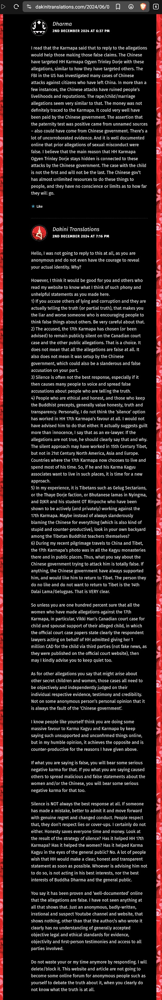

Dangers of Outsourcing Your Learning from the Karmapa to "Dakini Translations" Adele Tomlin
If you can access the 17th Karmapa Ogyen Trinley Dorje’s teachings directly at his official websites, compiled by his own personal translation crew, why do you need Dakini Translations Adele Tomlin exactly? Do you highly doubt your own judgment that you need to rely on it to determine how to perceive? What makes you think it is any better than you? Would you be surprised if I tell you it is an incompetent thinker? Hard to believe, huh? Given how it has been ramping up its holiness so shamelessly. Why don’t you see for yourselves and make your own judgment, yes?
The following snapshot shows comment reply by ex-barrister Adele Tomlin, on the sexual allegations against the Karmapa. Before you proceed to read my responses below, I invite you to respond first on your own on a separate piece of paper/ electronic note. Why? Because Adele Tomlin forbids us to respond (as you'll see in the first line of the last paragraph of its reply)! Let's rebel against her wish and see how things turn out, yes?

Are you ready? Let's compare your responses with mine then!
- Why exactly do you keep questioning our identities? To track us down and to silence us? If your arguments can stand the test of scrutiny, why the need to stalk and track down whom your opponents are?
- Aren't you the one who has been accusing various lineage gurus as sex-beasts without presenting any verifiable evidence to readers? Also, aren't you accusing us, the opposing views, as liars and you encourage readers to think of us as sexists/ misogynists/ anti-feminists, even though all evidences against you are readily verifiable at your own website? On the other hand, the so-called truths you have been oppressively shoving down readers' throats are nothing but your "personal observations," "personal experience," "from reliable sources of yours," - all can never be verified openly objectively standing the test of public scrutiny, Madam Hearsay!
- The court document clearly states all allegations are mere presumptions for the purpose of application. Either you are semiliterate or deliberately skewing the truth. Why do you think readers will fall for your manipulative patronizing self-righteous tone? What is your purpose in portraying the Karmapa as guilty, flawed, incapable as possible? An indisputably innocent person - you treat as guilty, a powerful political entity the Chinese government - you treat as irrefutably innocent, why such prejudice?
- What else to talk when all evidence is blatantly clear? Why are you yourself being silent for the "unresolved questions" we posed to you? Is it because you are semiliterate who can make sense only through making self-righteous indisputable presumptions? To dismiss our slanderous accusations, you can simply stand up and speak up. Are you afraid that your speaking up will only backfire, undoing the damages against vajrayana Buddhism which you have planned deliberately for over a decade?
- The allegations are indisputably false. Nothing to hide. Nothing to clarify. Readers can verify themselves at the court document link anytime. As a lawyer, one should embrace the fair notion of "presumption of innocence" instead of "presumption of guilt," which seems to permeate in your perception of reality. Why do you sound so excited in portraying the Karmapa, supposedly your root guru, as guilty? Do you personally indulge in the sadistic satisfaction derived from undermining any superior figures, particularly authentic lineage gurus? Is this how you appease your sense of insecure inadequate ugly self? Or any other bigger hidden agenda? So first, you gain public trust by pretending to promote the Karmapa's teachings; then as we open up to you, you exploit our receptiveness to the Buddhadharma by intruding on our minds with your pervasive "presumption of guilt" in judging Vajrayana Buddhism, especially the Karmapa. Do you really think our profound reverence to the Karmapa will somehow be applied (diverted?) to you? What do you actually accomplish by making the public lose faith in the Karmapa? What do you expect out of the destruction of Vajrayana Buddhism? Also, why do you constantly speculate about the Karmapa's whereabouts? Are you stalking him? Are you working with any entities to nail him down, dominate, control, oppress, silence, or even replace him yourself? Why not give him (and everyone else) space to do whatever he wants and respect that boundary? If you had been a lawyer, why wouldn't you be capable of defending yourself with the "unresolved questions" posed to you?
- You are not convincing enough; elaborate "your experience" to us readers. It's rather funny how upset you sound when the Chinese government is being doubted, any particular reasons behind all this? You really lose your cool when speaking on behalf of China. A dharma translator is defending the China and speaking against all lineage gurus - How is this possible?
- You naively think putting up photos means supporting? What about the photos of the most wanted criminals being put up everywhere? Do they mean we support them? Why do you sound like you know the Chinese government extremely well?
Why did the Karmapa have to run away from Tibet to India if indeed China had been altruistically kind and supportive towards his pure dharma activities? Who cares whom China likes or wants to return to Tibet? Why do you mind? What exactly do you imply by bringing up your pilgrimage trips there? Are you leaking your association with China to us? Or are you trying to harm the good reputation of China by their association with you?
- The very same court document to which you refer in framing a guilty impression of the Karmapa contains all the answers - you are boringly repetitive! The remaining two women only presented easily fabricated chat snapshots and AI-replicable audios, which means not convincing enough to warrant further consideration. Of course anyone sane, except you, is one hundred percent sure that the Karmapa is innocent. That's why we rebel against your command to be silent. How can you prove one hundred percent that China is innocent and has no ulterior plans plotted in the background? Are you even capable of that? You are not China, are you? Shouldn't you keep silent for points you cannot prove?
- I am truly sorry you see it that way. With or without all the dramas you mention, the Karmapa's activities do just fine, people practice the dharma and many achieve enlightenment secretly without the need for announcing. In fact, the slanders only serve to benefit the Karmapa as they help expose and weed out unqualified vessels, such as yourself. Evidence has never been clearer as mentioned earlier - what else to speak about? By the prominence of lineage root spanning nearly a thousand years old, the Karmapa understandably has no interests in gaining approval/ validation from the masses nor increasing the number of devotees, but to benefit sentient beings purely, sincerely, simply with authentic dharma teachings - why would he be concerned with clarifying any doubts against him when the depth of student-guru affinity is largely predetermined by karmic connections made in eons of previous lifetimes and will continue into future lifetimes even after attaining complete Buddhahood? What we serious students should do is to cultivate genuine renunciation, practice diligently as instructed, gain enlightenment, help other sentient beings as to reduce his workload as a Bodhisattva, not fuss around with inconsequential ever-changing matters surrounding power, politics, and his personal space. If anyone is in love with the Karmapa, which is normal, then ask yourselves what is your love really about? To own him solely for your own personal benefit or to enable him to be reached by all sentient beings for everyone's benefits? With the latter, clearly jealous remarks such as what he is doing, where with whom, etc. are simply against the notion of bodhicitta. If he can fulfill his sole wish to benefit more beings by his associations with more people, why would someone who loves him purely want to go against him and makes him sad? Evil perverts might go as far as to destroy him and forbid others to have/ enjoy his company simply because they can't own/ control him. Love is supposed to be uplifting not restricting. If your so-called notion of love is about owning, possessing, controlling - clearly, you are in love with yourself, not the other person at all. And, you will probably never ever experience genuine unconditional love (i.e. giving) by always putting yourself in the spotlight above all else (i.e. parasiting). Wouldn't you want your love for him to liberate you and others towards the recognition of true nature or rather tie us all down in endless dramas of samsara? Besides, how would we have any rights to demand other persons to act as we wish? Everyone, including the Karmapa, deserves their own space and freedom, so please respect that boundary. Rather than blaming the guru for not salvating you out of your negativity, thus overburdening him, why don't you learn to take accountability in your own body, speech, and mind, thus lighten his load? Why the mindset of taking advantage of the guru's compassion like a parasite - always expecting to take, take, take, like an insatiable hungry ghost? Why not become the guru's most reliable wish-fulfilling gem - always support, serve, give, even sacrifice to the best of our capacity? Genuine love would never burden but lighten.
Your dogged determination in defending China with your patronizing tone is doing disservice to the public impression towards China. Apparently, you are harming China, not helping.
It's you who should break the SILENCE and speak up against us readers! Stop pretending nothing is happening with the few likes or shares of your posts at facebook, as if life goes on as normal. People do notice how strangely obtrusive of you to post same old posts repeatedly every few hours in facebook groups - why do you need to paralyze people's minds with such intrusion? Can you ever be capable to act civilly by not trespassing unreasonably on people's attention? Are you not aware many people have to block you simply to avoid your encroachment on our personal space? Isn't it obvious the "likes" your posts receive, if at all genuine, are aimed at the Karmapa's teachings and the dharma? Can you ever be capable of posting some original work of yours, unrelated whatsoever to the Karmapa nor vajrayana buddhism? Can you be sure those few likes or followers are not those who pity or sneer at your desperate need for attention and approval? What makes you so sure people are innately dumb and helplessly obedient to you?
You owe us readers a responsible truthful explanation: Why do you portray the Karmapa as guilty while simultaneously promote (which actually DiSTORT) his teachings? The transcripts are freely available at the youtube channel, which are orally translated in real time by Khenpo David Karma Choepel. Either you simply type the whole thing while listening or copy-paste the transcripts available at aryakshema.com (which are usually available ahead of you) and make minor adjustments (to hide the fact that you steal his work - if not, please prove your HONESTY, but how?). Then, your so-called translation is done and offered to readers in hope of gaining some donation, as evidenced by the prominence of "donate button" on every page of your website. Your unique selling point is to add "personal observations" at the very beginning, placing the transcripts in the bottomest part possible, instead of the other way around (Is this how you set an example of how to treat your root guru?). Shoving the guru (the precious one from whom we take up learning) down to the bottomest part possible, while you (a nobody but a copycat) at the highest top to monopolize readers' attention as much as possible, even though we come to you for the Karmapa's teachings, not for you. AGAINST THE BEST INTERESTS OF BUDDHA DHARMA AND THE GENERAL PUBLIC, you aggressively shove your twisted views down our throats, forcefully pollute our mind with your foul propaganda even before giving us any chance to construct own meaning purely with the Karmapa's teachings. You take away our freedom to make own judgment throughout our learning from the Karmapa. You stand in our way obstructing the pure karmic connection between us and the Karmapa. As different individuals perceive the highlights of the Karmapa's teachings differently according to our unique dispositions, you make sure everyone's personal unique journeys of transformation be entirely wiped out and superseded with foul propaganda concealed in your plain "personal observations" (not reflections!) - readers should justifiably wonder how outrageously ethical is that? WOULDN'T YOU BEAR SOME SERIOUS HEAVY KARMA FOR encouraging readers to have impure perception towards the Karmapa by portraying him with as many flaws as possible, distorting his teachings with various self-righteous personal observations and exploiting his name, prominence, credibility to back your numerous questionable claims and self-serving initiatives, which include taking donations?
- You don't speak or think like a lawyer, not even a civil human but a tyrant with such ill-concealed contempt for us readers! Your website is an oppressive dungeon for selected obedient imbeciles; everything is centered around you and you alone, nothing original but cannibalizing others' works by claiming them yours. Save your intimidating tone. People see through your colors and will continue to voice what they think in spite of your relentless silencing pursuits.
* The comments in the snapshot can be found at the bottomest part of its webpage.
----
REFLECTIONS
Just as I invited you readers to FIRST construct own meanings by responding to Adele Tomlin's comment before comparing with mine LATER, readers should be encouraged to connect to the Karmapa's teachings directly at his official channels to preserve the integrity of own internal perceptions without any external influence that can potentially distort perception before exposing themselves to others' points of view. Direct connection without a redundant third-party like "Dakini Translations" ensures us to receive the Karmapa's powerful blessings in full force, purifying our mindstreams without adulteration that we become more receptive to the essence of the teachings. In other words, our understanding doesn't just land on conceptual level but more on experiential, intuitive level. Our spiritual journeys progress much faster as they unfold perfectly according to each of our own unique karmic paths of liberation without unsolicited intervention. Readers would certainly experience purer level of perceiving, had Adele Tomlin placed the Karmapa's teaching transcripts at the very beginning and its foul propaganda masked as "personal observations" at the bottomest part possible (to secure most abundant time possible for readers to construct own meanings before comparing to its warped interpretations). But then you might ask, are its observations any superbly special worthy of my precious time? The matter-of-fact tone of the Karmapa is a stark contrast to the self-righteous prejudiced tone of Adele Tomlin. As are easily observable, the tactics Adele Tomlin use to gain attention, approval, validation, and control over us are primarily FOG: Fear, Obligation, and Guilt. Some people might fear /feel obliged /feel guilty for going against what the Karmapa says. If Adele Tomlin genuinely wish to promote the Karmapa's teachings, it should refrain from using his name to back its self-serving claims, coercing us to compliance (especially when there is no way for us to verify whether indeed the Karmapa says so). The main focus is to maximize readers' learning potentials, not highlight its personal twisted glory. Readers, trust your own judgment and learn from the Karmapa directly at official channels. Do TAKE YOUR TIME to reflect and write down your very own "personal reflections," then if you wish, compare to "personal observations" of Adele Tomlin and see how exactly its judgmental observations /experience enrich your inner spiritual journey or rather distract you away with unoriginal oversexualized self-righteous sensationalism.
Spiritual journey is supposed to be deeply personal and private! No one should stand in between you and the Karmapa (or any other lineage gurus of your faith). If you continue to allow Adele Tomlin to overstep your personal boundaries, trample down its perverted interpretations (arising from its impure karmic propensities, which has nothing to do with you) into your psyche, making you confuse its judgments as yours, questioning your own sanity, you are basically taking refuge in Adele Tomlin (REPLACING the Karmapa), following its footsteps down its abyss of impure karmic imprints, taking on its replicated karmic loads, drifting farther away from the authentic lineage gurus, Buddha, Dharma, and Sangha. Instead of being uplifted, you are being weighed down by (subconscious replication through uninvited overexposure to) its hostility, paranoia, insecurity, etc. - all its qualities that serve only as obstructions to spiritual progress. In a nutshell, you might as well as pray to Adele Tomlin for your liberation to lower realms.
Given our analysis of its behavior, readers should come to the conclusion that Adele Tomlin does not qualify as a dharma translator. Outstanding dharma translators have to possess a certain level of meditative absorptions to be able to recognize the arising of own mind projections, suspend judgments, sustain the minds in free and stable open space, before interpreting the gurus' messages authentically to readers. The goal of ethical dharma translators is never about outshining the gurus or readers in one way or another, but serving the gurus and readers by preserving messages in full integrity, establishing the pure karmic connection between readers and the gurus, empowering readers to construct own meanings in their unique spiritual journeys. However readers interpret the messages are essentially personal freedom, not even the gurus can impose upon. Serious vajrayana practitioners must be mindful and selective with any inputs that feed into our minds. By maintaining the purity of your direct connection to lineage gurus, you awaken the best possible versions of yourselves, achieve the maximum heights of spiritual progress possible, and rewrite your own spiritual destinies more powerfully. Ask yourselves, would you willingly modify the nature of your special, personal, pure connection to the Karmapa with an additional redundant dogged presence of (unethical, tyrannical, semiliterate) Adele Tomlin lurking parasitically in your psyche until the time of your deaths? If not, then start taking back your power, directly connect to the Karmapa himself by going to his official channels for any teachings, news, and updates.